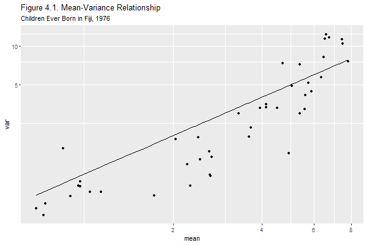

{% include r.css %}


<div id="c4s1" class="section level1 first">
<h1 class="first">4. Poisson Models for Counts</h1>
<p>This unit illustrates the use of Poisson regression for modeling
count data.</p>
<div id="a-poisson-model-for-counts" class="section level2">
<h2>4.3 A Poisson Model for Counts</h2>
<p>We will use the data from Fiji on children ever born that appear on
Table 4.1 of the lecture notes. The data are available in the datasets
section in both plain text and Stata formats. We will read the Stata
file:</p>
<pre class="r"><code>&gt; library(haven)
&gt; ceb &lt;- read_dta(&quot;https://grodri.github.io/datasets/ceb.dta&quot;)
&gt; head(ceb)</code></pre>
<pre><code># A tibble: 6 × 7
      i       dur       res              educ  mean   var     n
  &lt;dbl&gt; &lt;dbl+lbl&gt; &lt;dbl+lbl&gt;         &lt;dbl+lbl&gt; &lt;dbl&gt; &lt;dbl&gt; &lt;dbl&gt;
1     1   1 [0-4] 1 [Suva]  1 [None]          0.5   1.14      8
2     2   1 [0-4] 1 [Suva]  2 [Lower primary] 1.14  0.730    21
3     3   1 [0-4] 1 [Suva]  3 [Upper primary] 0.900 0.670    42
4     4   1 [0-4] 1 [Suva]  4 [Secondary+]    0.730 0.480    51
5     5   1 [0-4] 2 [Urban] 1 [None]          1.17  1.06     12
6     6   1 [0-4] 2 [Urban] 2 [Lower primary] 0.850 1.59     27</code></pre>
<p>The file has 70 observations, one for each cell in the table. Each
observation has a sequence number, numeric codes for marriage duration,
residence and education, the mean and variance of children ever born,
and the number of women in the cell.</p>
<div id="mean-variance-relationship" class="section level3">
<h3>Mean-Variance Relationship</h3>
<p>We start by doing Figure 4.1, plotting the cell variances versus the
cell means using a log-log-scale for cell with at least 20 cases.</p>
<pre class="r"><code>&gt; library(ggplot2)</code></pre>
<pre><code>Use suppressPackageStartupMessages() to eliminate package startup messages</code></pre>
<pre class="r"><code>&gt; library(dplyr)
&gt; ceb20 &lt;- filter(ceb, n &gt; 20)
&gt; f &lt;- function(x) x
&gt; png(file=&quot;c4fig1r.png&quot;, height=400, width=600)
&gt; ggplot(ceb20, aes(mean, var)) + geom_point() + 
+   geom_function(fun=f) +  coord_trans(x=&quot;log&quot;, y=&quot;log&quot;) +  
+   ggtitle(&quot;Figure 4.1. Mean-Variance Relationship&quot;, 
+     subtitle=&quot;Children Ever Born in Fiji, 1976&quot;)
&gt; dev.off()</code></pre>
<pre><code>png 
  2 </code></pre>
<p></p>
<p>Clearly the variance increases with the mean. Most of the points lie
below the 45 degree line, indicating that the variance is not exactly
equal to the mean. Still, the assumption of proportionality brings us
much closer to the data than the assumption of constant variance.</p>
</div>
<div id="response-offset-and-predictors" class="section level3">
<h3>Response, Offset and Predictors</h3>
<p>The dataset does not have information about the number of children
ever born (CEB) to each woman, but it turns out that we can still model
the mean by working with the cell totals and introducing the log of the
number of women in the cell as an <em>offset</em>.</p>
<p>If the number of CEB to <em>one</em> woman in a given cell is a
Poisson random variable with mean (and variance) <span
class="math inline">\(\mu\)</span>, then the number born to all
<em>n</em> women in that cell is a Poisson r.v. with mean (and variance)
<span class="math inline">\(n\mu\)</span>. The log of the expected sum
is <span class="math inline">\(\log(n) + \log(\mu)\)</span>, and
consists of a known offset plus the quantity we are interested in
modeling. See the notes for further details</p>
<p>We therefore start by computing the outcome, the total CEB in each
cell, and the offset. We also make sure the discrete variables read as
“labeled” by <code>haven</code> are treated as factors.</p>
<pre class="r"><code>&gt; ceb &lt;- mutate(ceb, y = round(mean * n), os = log(n),
+   dur=as_factor(dur), res=as_factor(res), educ=as_factor(educ))</code></pre>
</div>
<div id="the-null-model" class="section level3">
<h3>The Null Model</h3>
<p>We are ready to fit the null model, which has an offset but no
predictors.</p>
<pre class="r"><code>&gt; m0 &lt;- glm(y ~ 1, family=poisson, offset=os, data=ceb)
&gt; m0</code></pre>
<pre><code>
Call:  glm(formula = y ~ 1, family = poisson, data = ceb, offset = os)

Coefficients:
(Intercept)  
      1.376  

Degrees of Freedom: 69 Total (i.e. Null);  69 Residual
Null Deviance:      3732 
Residual Deviance: 3732     AIC: 4163</code></pre>
<pre class="r"><code>&gt; exp(coef(m0))</code></pre>
<pre><code>(Intercept) 
   3.960403 </code></pre>
<pre class="r"><code>&gt; log(weighted.mean(ceb$mean, ceb$n))</code></pre>
<pre><code>[1] 1.376369</code></pre>
<p>The constant is the log of the mean number of children ever born.
Exponentiating we see that the estimated mean is almost four children
per woman. The estimate coincides with the sample mean, as we verified
by averaging the cell means with the number of women as a frequency
weight.</p>
<p>The deviance of 3,732 on 69 d.f. gives a clear indication that the
model doesn’t fit the data. The hypothesis that the expected number of
CEB is the same for all women regardless of marriage duration, residence
and education, is soundly rejected,</p>
</div>
<div id="one-factor-models" class="section level3">
<h3>One-Factor Models</h3>
<p>Next we fit the three one-factor models, starting with residence:</p>
<pre class="r"><code>&gt; mr &lt;- glm(y ~ res, family=poisson, offset=os, data=ceb)
&gt; mr    </code></pre>
<pre><code>
Call:  glm(formula = y ~ res, family = poisson, data = ceb, offset = os)

Coefficients:
(Intercept)     resUrban     resRural  
     1.2046       0.1443       0.2281  

Degrees of Freedom: 69 Total (i.e. Null);  67 Residual
Null Deviance:      3732 
Residual Deviance: 3659     AIC: 4095</code></pre>
<pre class="r"><code>&gt; exp(coef(mr))</code></pre>
<pre><code>(Intercept)    resUrban    resRural 
   3.335417    1.155219    1.256160 </code></pre>
<pre class="r"><code>&gt; anova(m0, mr)</code></pre>
<pre><code>Analysis of Deviance Table

Model 1: y ~ 1
Model 2: y ~ res
  Resid. Df Resid. Dev Df Deviance
1        69     3731.9            
2        67     3659.3  2   72.572</code></pre>
<p>The estimates show that women in urban and rural areas have on
average 16 and 26% more children than women in Suva. The model
chi-squared of 73 on 2 d.f. tells us that this model is a significant
improvement over the null. The deviance, still in the thousands, tells
us that this model is far from fitting the data.</p>
<p>Now for education</p>
<pre class="r"><code>&gt; me &lt;- glm(y ~ educ, family=poisson, offset=os, data=ceb)
&gt; me    </code></pre>
<pre><code>
Call:  glm(formula = y ~ educ, family = poisson, data = ceb, offset = os)

Coefficients:
      (Intercept)  educLower primary  educUpper primary     educSecondary+  
           1.6473            -0.2118            -0.6161            -1.2247  

Degrees of Freedom: 69 Total (i.e. Null);  66 Residual
Null Deviance:      3732 
Residual Deviance: 2661     AIC: 3098</code></pre>
<pre class="r"><code>&gt; exp(coef(me))</code></pre>
<pre><code>      (Intercept) educLower primary educUpper primary    educSecondary+ 
        5.1928251         0.8091371         0.5400718         0.2938527 </code></pre>
<pre class="r"><code>&gt; anova(m0, me)</code></pre>
<pre><code>Analysis of Deviance Table

Model 1: y ~ 1
Model 2: y ~ educ
  Resid. Df Resid. Dev Df Deviance
1        69     3731.9            
2        66     2661.0  3   1070.8</code></pre>
<p>The estimates show that the number of CEB declines substantially with
education. Women with secondary education or more have 71% fewer
children than women with no education (or only 29% as many). The
educational differential is highly significant, but this model doesn’t
fit the data.</p>
<p>Finally, here’s duration:</p>
<pre class="r"><code>&gt; md &lt;- glm(y ~ dur, family=poisson, offset=os, data=ceb)
&gt; md    </code></pre>
<pre><code>
Call:  glm(formula = y ~ dur, family = poisson, data = ceb, offset = os)

Coefficients:
(Intercept)       dur5-9     dur10-14     dur15-19     dur20-24       dur25+  
    -0.1036       1.0449       1.4449       1.7068       1.8775       2.0789  

Degrees of Freedom: 69 Total (i.e. Null);  64 Residual
Null Deviance:      3732 
Residual Deviance: 166.1    AIC: 607.5</code></pre>
<pre class="r"><code>&gt; exp(coef(md))</code></pre>
<pre><code>(Intercept)      dur5-9    dur10-14    dur15-19    dur20-24      dur25+ 
  0.9015817   2.8430759   4.2416297   5.5110572   6.5369748   7.9953104 </code></pre>
<pre class="r"><code>&gt; anova(m0, md)</code></pre>
<pre><code>Analysis of Deviance Table

Model 1: y ~ 1
Model 2: y ~ dur
  Resid. Df Resid. Dev Df Deviance
1        69     3731.9            
2        64      166.1  5   3565.8</code></pre>
<p>Not surprisingly, the number of CEB is much higher for women who have
been married longer. This is by far the most important predictor of CEB,
with a chi-squared of 3,566 on just 5 d.f. In fact, a demographer
wouldn’t even have looked at models that did not include a control for
duration of marriage. It’s nice to see that Poisson regression can
uncover the obvious :) Note that this model still doesn’t fit the
data.</p>
<p>The deviances given in this section are pretty close to the deviances
in Table 4.3 of the notes. You will notice small differences due to the
use of different rounding procedures. In the notes we multiplied the
mean CEB by the number of women and retained a few decimals. Here we
rounded the total number of CEB to the nearest integer. If you omit the
rounding you will reproduce the results in the notes exactly.</p>
</div>
<div id="two-factor-models" class="section level3">
<h3>Two-Factor Models</h3>
<p>We now consider models that take two of the three factors into
account. Following the notes we consider only models that include
duration of marriage, an essential control when we study cumulative
fertility. This leaves two models with main effects of two factors, and
another two models that add one interaction.</p>
<p>Because we are only interested in deviances I will run the estimation
commands quietly.</p>
<p>So here are the additive models</p>
<pre class="r"><code>&gt; mdr &lt;- glm(y ~ dur + res, family=poisson, offset=os, data=ceb)
&gt; deviance(mdr)</code></pre>
<pre><code>[1] 120.6804</code></pre>
<pre class="r"><code>&gt; mde &lt;- glm(y ~ dur + educ, family=poisson, offset=os, data=ceb)
&gt; deviance(mde)</code></pre>
<pre><code>[1] 100.1917</code></pre>
<p>And here are the models with one interaction</p>
<pre class="r"><code>&gt; mdxr &lt;- glm(y ~ dur * res, family=poisson, offset=os, data=ceb)
&gt; deviance(mdxr)</code></pre>
<pre><code>[1] 108.8965</code></pre>
<pre class="r"><code>&gt; mdxe &lt;- glm(y ~ dur * educ, family=poisson, offset=os, data=ceb)
&gt; deviance(mdxe)    </code></pre>
<pre><code>[1] 84.53047</code></pre>
<p>The best fit so far is the model that includes duration and
education, but it exhibits significant lack of fit with a chi-squared of
84.5 on 46 d.f.</p>
</div>
<div id="the-three-factor-additive-model" class="section level3">
<h3>The Three-Factor Additive Model</h3>
<p>We are now ready to look at models that include all three factors. We
start with the additive model.</p>
<pre class="r"><code>&gt; mder &lt;- glm(y ~ dur + res + educ, family=poisson, offset=os, data=ceb)
&gt; summary(mder)</code></pre>
<pre><code>
Call:
glm(formula = y ~ dur + res + educ, family = poisson, data = ceb, 
    offset = os)

Deviance Residuals: 
    Min       1Q   Median       3Q      Max  
-2.2960  -0.6641   0.0725   0.6336   3.6782  

Coefficients:
                  Estimate Std. Error z value Pr(&gt;|z|)    
(Intercept)       -0.11710    0.05491  -2.132 0.032969 *  
dur5-9             0.99693    0.05274  18.902  &lt; 2e-16 ***
dur10-14           1.36940    0.05107  26.815  &lt; 2e-16 ***
dur15-19           1.61376    0.05119  31.522  &lt; 2e-16 ***
dur20-24           1.78491    0.05121  34.852  &lt; 2e-16 ***
dur25+             1.97641    0.05003  39.501  &lt; 2e-16 ***
resUrban           0.11242    0.03250   3.459 0.000541 ***
resRural           0.15166    0.02833   5.353 8.63e-08 ***
educLower primary  0.02297    0.02266   1.014 0.310597    
educUpper primary -0.10127    0.03099  -3.268 0.001082 ** 
educSecondary+    -0.31015    0.05521  -5.618 1.94e-08 ***
---
Signif. codes:  0 &#39;***&#39; 0.001 &#39;**&#39; 0.01 &#39;*&#39; 0.05 &#39;.&#39; 0.1 &#39; &#39; 1

(Dispersion parameter for poisson family taken to be 1)

    Null deviance: 3731.852  on 69  degrees of freedom
Residual deviance:   70.665  on 59  degrees of freedom
AIC: 522.14

Number of Fisher Scoring iterations: 4</code></pre>
<pre class="r"><code>&gt; exp(coef(mder))</code></pre>
<pre><code>      (Intercept)            dur5-9          dur10-14          dur15-19 
        0.8894987         2.7099627         3.9329722         5.0216439 
         dur20-24            dur25+          resUrban          resRural 
        5.9590510         7.2167534         1.1189812         1.1637648 
educLower primary educUpper primary    educSecondary+ 
        1.0232387         0.9036856         0.7333373 </code></pre>
<p>This model passes the goodness of fit hurdle, with a deviance of
70.67 on 59 d.f. and a corresponding P-value of 0.14, so we have no
evidence against this model.</p>
<p>Briefly, the estimates indicate that the number of CEB increases
rapidly with marital duration; in each category of residence and
education women married 15-19 years have five times as many children as
those married less than five years. Women who live in urban and rural
areas have 12% and 16% more children than women who live in Suva and
have the same marriage duration and education. Finally, more educated
women have fewer children, as women with secondary or more education
have on average 27% fewer children than women with no education who live
in the same type of place of residence and have been married just as
long.</p>
</div>
<div id="three-factor-models-with-interactions" class="section level3">
<h3>Three-Factor Models with Interactions</h3>
<p>We now put the additive model to some “stress tests” by considering
all possible interactions.</p>
<pre class="r"><code>&gt; models &lt;- c(&quot;dur+res*educ&quot;,&quot;dur*res+educ&quot;,&quot;dur*educ+res&quot;,
+   &quot;(dur+res)*educ&quot;,&quot;(dur+educ)*res&quot;,&quot;dur*(res+educ)&quot;,
+   &quot;dur*res*educ - dur:res:educ&quot;)
&gt; dd &lt;- matrix(0,length(models),2)
&gt; i &lt;- 1
&gt; for(model in models) {
+   formula &lt;- paste(&quot;y ~&quot;,model)
+   m &lt;- glm(formula, family=poisson, offset=os, data=ceb)
+   dd[i,] &lt;- c(deviance(m), m$df.residual)
+   i &lt;- i+1
+ }
&gt; data.frame(model=models, deviance=round(dd[,1],2), df=dd[,2],
+   pval=round(pchisq(dd[,1],dd[,2],lower.tail=FALSE),4))</code></pre>
<pre><code>                        model deviance df   pval
1                dur+res*educ    59.92 53 0.2391
2                dur*res+educ    57.13 49 0.1986
3                dur*educ+res    54.80 44 0.1274
4              (dur+res)*educ    44.52 38 0.2163
5              (dur+educ)*res    44.31 43 0.4162
6              dur*(res+educ)    42.65 34 0.1467
7 dur*res*educ - dur:res:educ    30.86 28 0.3235</code></pre>
<p>These calculations complete Table 4.3 in the notes. I reported the
deviances for consistency with the notes, but could just as well have
reported likelihood ratio tests comparing each of these models to the
additive model. Make sure you know how to use the output to test, for
example, whether we need to add a duration by education interaction. It
should be clear from the list of deviances that we don’t need to add any
of these terms. We conclude that the additive model does a fine job
indeed.</p>
<p>It’s important to note that the need for interactions depends exactly
on what’s being modeled. Here we used the log link, so all effects are
<em>relative</em>. In this scale no interactions are needed. If we used
the identity link we would be modeling the actual number of children
ever born, and all effects would be <em>absolute</em>. In that scale we
would need, at the very least, interactions with duration of marriage.
See the notes for further discussion.</p>
<p><small>Updated fall 2022</small></p>
</div>
</div>
</div>
